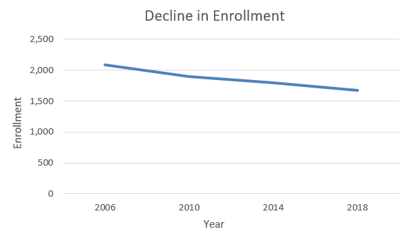

Support good public schools and vote "NO" on the $100.6 million facilities plan for Winnetka District 36. With declining enrollment in Winnetka's K-8 schools, this facilities project is too expensive. It would be the most expensive referendum in Illinois history for an elementary school district. Nearly $60 million of the project is for non-essential additions and renovations.
Vote NO on April 2nd, and the District can offer voters a better plan in the future.
Winnetka Residents can find their polling center here. Polling centers will be open April 2nd.
You can vote as early as March 18th. Nearest early-voting polling place is Centennial Arena in Wilmette
Vote by mail now here!
Many members of the Winnetka Community have conducted extensive research regarding the upcoming April 2nd referendum. Please click any of the following fields to explore topics regarding the referendum further.
If passed, this referendum is estimated to cost Winnetka property owners an additional $1,352 per $1 million fair market property value for 20 years. The total first phase of the project is $100.6 million, comprised of $90.6 million bond plus $10 million from reserves.
There are four ways of looking at the $100 million:
Winnetka taxpayers have a strong tradition of financially supporting educational excellence. When Winnetka D36 financial mismanagement resulted in overtaxation of approximately $40 million over a ten year period from 2003-2013, the School Board established a sound new financial philosophy to preserve taxpayer goodwill:
We believe long-term educational excellence is based on the following principle: When the schools don't need money, the community can trust the School Board not to ask for it. When the schools do need money, the School Board will trust the community to provide it.
A summary of over-taxation and the ensuing financial philosophy can be found here.
The referendum vote is timed just before Winnetka residents were to receive a significant tax break based on the abatement of those excess taxes. In the months leading up to the referendum vote, Winnetka District 36 has widely publicized that voters should examine the tax rate if the referendum passes compared to the past rate, which was a rate of overtaxation. In short, shame on the District for not being transparent with the community.
The "incremental" debt impact in online tax calculator is misleading because of scheduled debt elimination
The District’s estimated tax impact calculations reference only high debt expense years.
Total annual D36 debt spending has increased substantially since the '07 referendum:
How can there be facility overcrowding with declining enrollment? Mismanagement. This situation can be solved with zero-cost solutions.
District 36 is not at maximum capacity
As part of its Master Facility Plan, the District has established new capacity limits for schools based on "optimal" and "maximum" classroom sizes and extended day kindergarten at all three elementary schools. Without renovations or expansions, the District is currently operating under maximum capacity for K-4 (and enrollments are expected to continue to decline in the future).
Even as D36 enrollment continues to decline, students in the District are not evenly distributed across the three elementary schools. Based on the District's established attendance boundaries, 42.6% of K-4 students live in the Crow Island district, 25.7% in the Greeley district, and 31.6% in the Hubbard Woods district. Changing district attendance boundaries to more evenly distribute students is a no-cost solution to the imbalance problem.The District has indicated it will redistrict even if the April 2 referendum is not approved,
Extended day kindergarten has made the District's imbalance problem worse
With its huge impact on D36 facilities and resources, D36 administrators and School Board members should have delayed the decision to implement extended day kindergarten until after the Master Facility Plan was completed.* By delaying the decision, imbalance issues and capital expenditures resulting from extended day kindergarten could have been carefully evaluated in the context of the entire facility plan. This would have allowed administrators and the School Board to pursue the priorities and projects that would benefit the greatest number of D36 students.
Crow Island is at its lowest enrollment since the mid-1980s
Enrollment has declined nearly 20% since 2006; the District is projecting future decline through 2026.
District enrollment has declined 19.9% since the last referendum
The 2007 $47 million referendum was positioned as enabling District 36 "to maintain class size in light of projected increases in enrollment; to ensure that safe building use levels are not exceeded; to provide adequate space for curricular programming; to reflect changes in classroom support services."
Instead of the expected enrollment increases, enrollment has decreased significantly in Winnetka District 36. Enrollment in 2006-2007, the year of the last referendum, was 2,060. Today it is 1,650 (without Pre-K), a 19.9% decrease.
Enrollment is expected to continue to decline
A 2016 District study projected a loss of 70 students from 2015-2020 and another 120 students from 2020-2025.
At $23,000 per pupil, current District operating costs are 54% higher than in Wilmette and 18% higher than in Glencoe. The Village's annual budget notes that Winnetka D36 takes up the largest (and fastest growing) percentage of property taxes paid by residents.
The Village's annual budget notes that Winnetka D36 takes up the largest (and fastest growing) percentage of property taxes paid by residents.
Winnetka District 36 has a high relative operating cost per student for New Trier feeder schools. Although D36's enrollment falls between the more efficient Wilmette and Glencoe school districts, its operating costs are similar to much smaller districts:
Winnetka D36 has the highest percentage of debt to expenditures of all the feeder districts. Currently, debt expense is about twice that of the other districts:
In June 2017, the Winnetka D36 School Board decided to refund $30 million of long-term debt due to outsize operating fund reserves. This one-time move created an annual debt expense of $35.5 million (shown as a 2018 expenditure in the Illinois Report Card). This resulted in a total 2018 annual district expenditure of $75 million, or a per student operating cost of $44,970 for 2018. In other words, current operating costs per student are understated.
Loss of Institutional Memory
In 2007, Winnetka voters approved a $47 million referendum to "finance a comprehensive capital plan for all of our five schools." The Winnetka School Board stated that $14 million was undertaken to "update all buildings to current ventilation, plumbing, electrical and other standards."
Winnetka D36 debt payments already far exceed neighboring districts, with proposed increases widening that gap.
If approved, referendum debt will leverage the District to 94% of the limit.
Nearly $60 million of the FutureReady project is slated for non-essential "additions and renovations" at a time when enrollment is declining and Winnetka District 36 facilities are operating below capacity. This unnecessary facilities spending will crowd out spending for future educational needs and services.
The District lists three priorities driving the plan. As a way to assess the importance of these priorities, consider how each area meets the standard of being a "need" versus a "want."
Priority One: "Facility Repairs and Upgrades" account for $39.8 million of the total $100.6 million project.
Aging facilities need repair and some upgrades. There should be spending on necessary repairs. And a case can be made that some upgrades are reasonable, such as $11 million for HVAC upgrades as a response to climate change. Winnetka has always invested in its facilities and should continue to do so in the future.
Priorities Two and Three: "Enrollment Balancing" and "Vision for Teaching and Learning"
The next two priorities drive $58.9 million of the plan. The majority of the funds go to expansions and renovations at Washburne ($42 million), and Crow Island ($14.5 million).
Due to plummeting enrollment, the District does not need to expand facilities. At Washburne the plan includes building a new wing to house Grades 5 and 6. At Crow Island the plan includes building three new classrooms. The District's current facilities, per the District's own capacity metrics, are sufficient for both current and projected enrollment levels.
Voters should scrutinize the expensive design elements that are part of the plan driven by a new "Vision for Teaching and Learning." A list of new facility features are here.
Basic metrics show that this plan is both expensive and excessive relative to current school building practices:
Shockingly, the research that the District offers to support this new facilities vision undermines their plan for expensive spending on facilities:
The District cites a study from England. This study finds that flexible school design explains a modest "16% of the variation in learning progress over a year." Ignoring the fact that the study is not a particularly good fit for Winnetka as it includes a very diverse student population and a range of facility ages (some dating to Victorian England), its findings contradict high spending:
"A very positive finding is that users (teachers) can readily action many of the factors. When the pilot results of the HEAD study were aired in 2013 the Department for Education said, 'There is no convincing evidence that spending enormous sums of money on school buildings leads to increased attainment'. However, these final results, based on a five-fold increase in the sample, show that small changes costing very little, or nothing, can make a real difference; for example, changing the layout of the room, the choices of display, or colour of the walls."
Finally, per the first line of the new District 36 Vision, "The Winnetka Public Schools community empowers every student to flourish in an innovative, experiential environment." This new vision deserves scrutiny, especially because it diverts enormous public resources to facilities instead of to teachers and educational services. In short, although interesting and provocative to think about redesigning the District's classroom spaces, the educational value of these innovations are unproven at this time.
Are our facilities in deplorable condition?
Our facilities are old and it has been standard practice for the District to have short-term and long-term plans for repairs and upgrades. Spending on facilities, by just about any metric, has been consistently high over the years. Remember, we have been carrying enormous reserves (more than 149% of operating expenses in recent years). And our debt to expenditures is much higher than surrounding districts. If management identified a serious health or safety concern, the District had ample reserves to deal with the problem immediately.
Recently, taxpayers rejected New Trier High School's high cost facilities referendum but approved a more reasonable second plan.
$60 million on non-essential projects is not as urgent as other demands facing Winnetka taxpayers. Click on the following headers to read more:
A Better Plan is focused on needs not wants. Winnetka taxpayers expect to invest to maintain aging neighborhood schools but reject expanding facilities and expensive unproven design renovation in a period of declining enrollment.
A Better Plan must be much lower in cost, because a $90.6 million bond referendum puts D36 close to the State of Illinois debt ceiling and will crowd out future spending on teachers and educational services.
Using the District's cost estimates, a Better Plan will be closer to $40 million, which means a $30 million bond referendum, or one-third of the cost of the current plan.
A Better Plan Addresses Facilities Repair and Upgrade Needs
A Better Plan would also address the following needs:
A Better Plan Offers No Cost Solutions
A Better Plan Rethinks Grade Configuration
Per the District's redistricting committee, there are good options for configuring grade levels that do not require expanding facilities:
{kind=link}